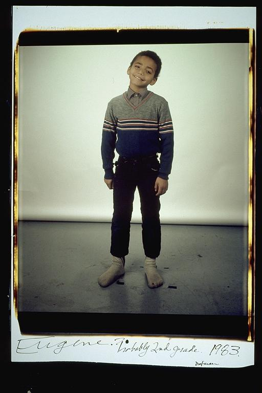

Eugene: "Probably 2nd Grade" -- Everyone who sees this picture automatically says that I look like my nephew. I'm not sure if this is the day that I missed the class picture, because I was leaning back in my chair and fell and busted my head. If so it was actually 1st grade. I was sitting with Chad Milner talking leaning back and pow, I hit the floor. I touched my head to rub it, and pulled back a blood covered hand. Ginny Charmers my 1st grade teacher took me to the bathroom, called my mother and I was taken to Cambridge Hospital to get 7 stitches. I was upset because I missed the picture, but Elsa was very nice and took a special picture of me and my sister later in the evening. I still have the scar from that day.
Aldo: This is a good picture of Eugene. Although he is only five years old, he looks much older. In later pictures he looks very comfortable, but at this point, he seems very camera shy.
Isaac: Eugene smiling. Here's the paradox of Eugene: the better his life gets, the less likely he is to smile in a picture. Go figure. He'll probably be grimacing in his wedding photo. He had a trying childhood, but here he is, smiling adorably. He looks taller than he actually was, due to the optical illusion created by his short pants. Man, it's hard to believe such a big man resulted from this cute little boy.
